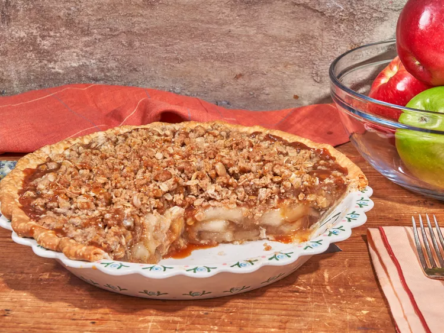

How to make Easy Caramel Apple Crisp Pie

Instructions
- Prep Time: 10 Minutes
- Cook Time: 35 Minutes
- Total Time: 1 Hour 15 Minutes
- Serving Size: 8
Ingredients
- 1 (9-inch) unbaked pie crust
- 2 (20 ounce) cans apple pie filling
- 1/3 cup thick caramel dip, plus more for topping
- 1 cup all-purpose flour
- 2/3 cup light brown sugar
- 2/3 cup rolled oats
- 1/2 cup butter, cut into cubes
- 1 1/2 teaspoons ground cinnamon
- 1/4 teaspoon salt
Directions
- Preheat the oven to 350 degrees (175 degrees C). Pour pie filling into curst
- Heat caramel dip in a microwave on High until runny, about 20 seconds. Drizzle caramel over pie filling
- Combine flour, brown sugar, oats, butter, cinnamon, and salt in a bowl and mix together with a for until combined and crumbly. Scatter crumble mixture evenly over pie. Place pie on a rimmed baking sheet.
- Bake in a preheated oven until crust is golden brown and filling is bubbly around the edges, 35 to 40 minutes. Let stand 20 minutes before serving
Return to Recipe List